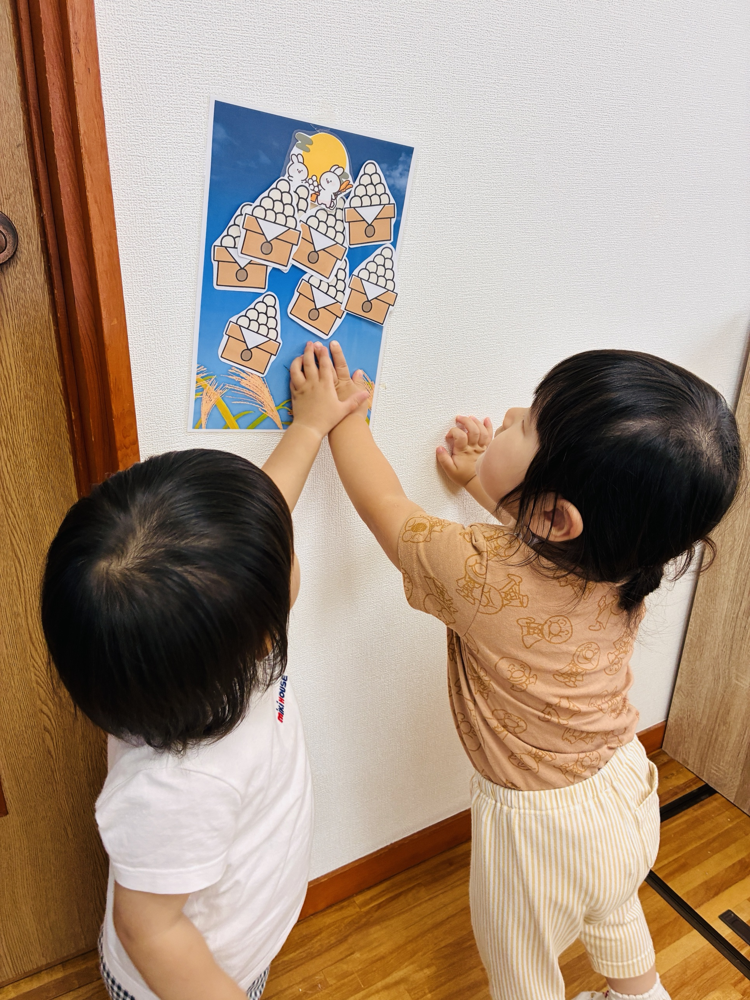
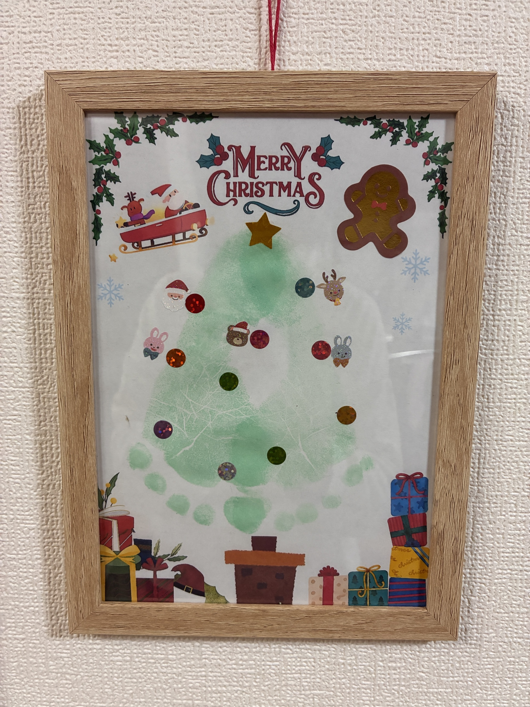
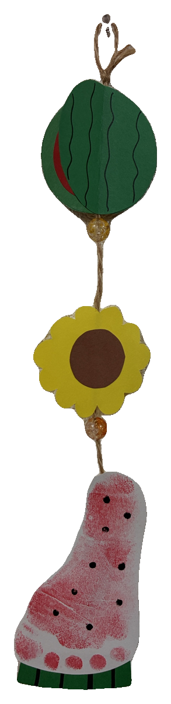
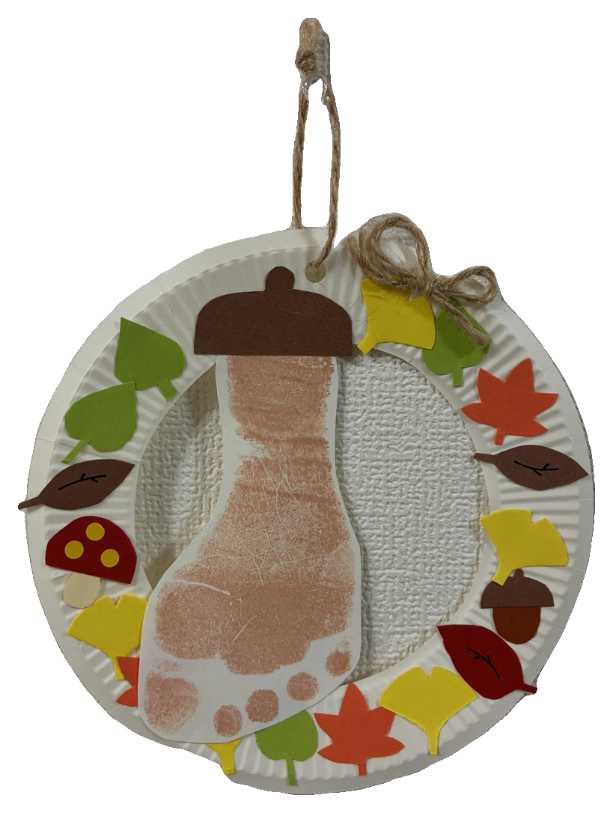
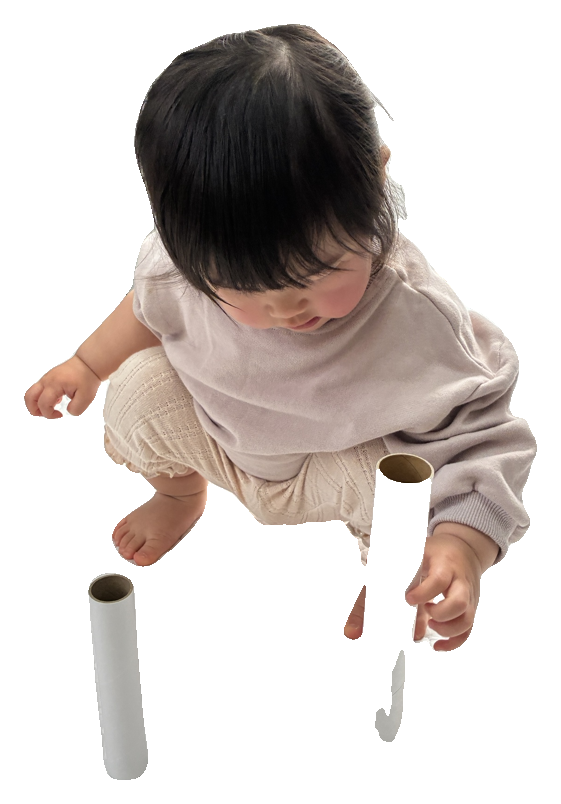
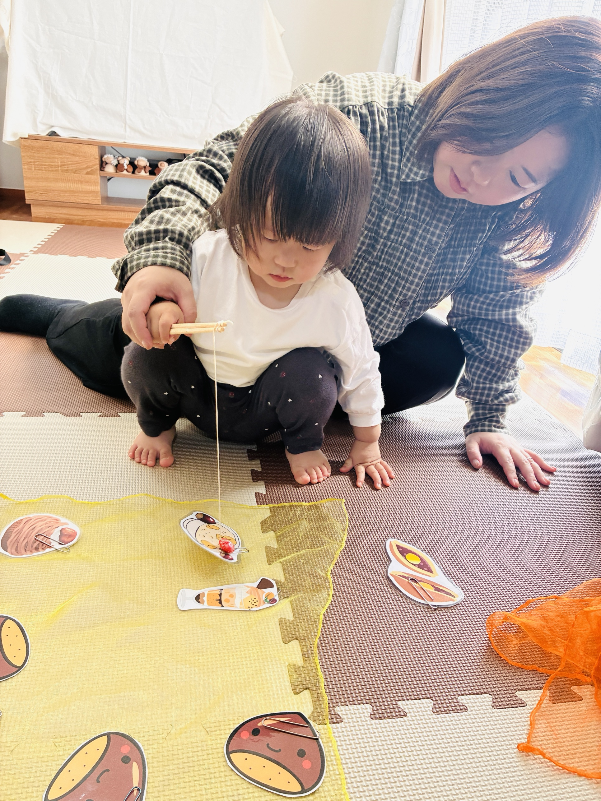
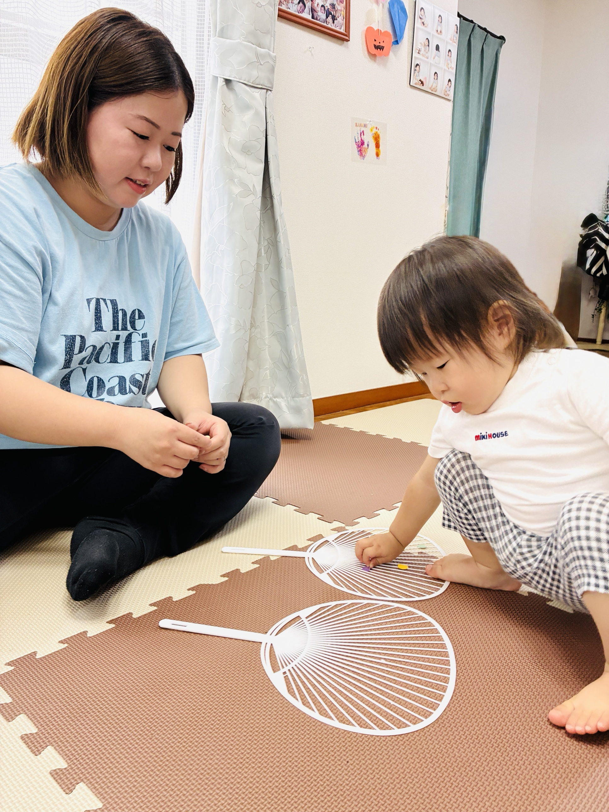
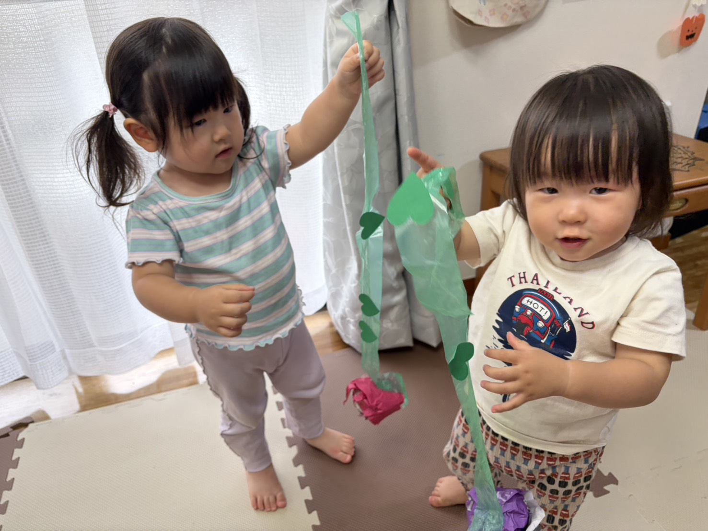
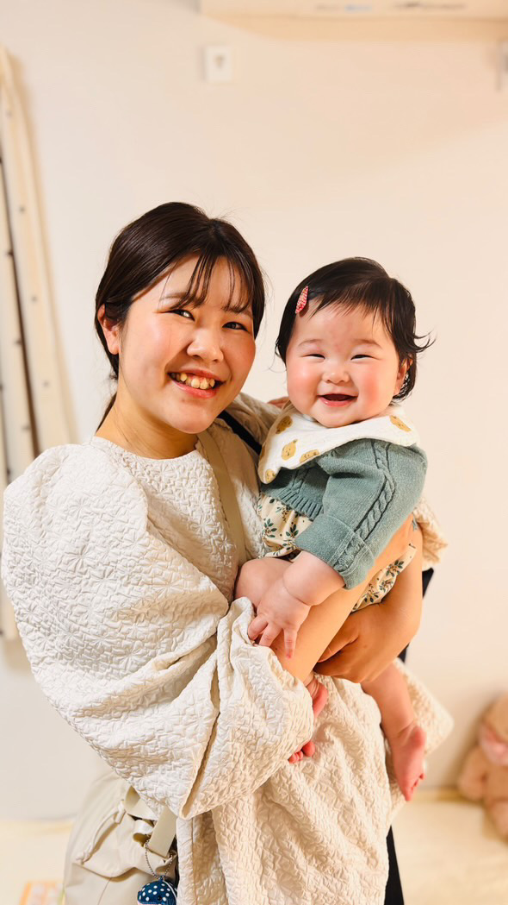

0歳からの親子教室 Otonoha
enjoy rhythm class
【限定】1月〜3月 全3回コース／単発参加OK
子どもの「好き」と「できる」が見つかる、
親子のリズム体操
歩けるお子さん〜3歳・月1回・足型製作つき

お申し込みはこちらご不明な点は、お気軽にご連絡ください
PRICE
2,000円
1回ごと
足型製作つき
おすすめ
単発なら 6,000円
5,500円
1回あたり 約1,833円
足型製作つき（3作品）
材料費・施設代はすべて含まれています。追加料金はありません。
毎回のお楽しみ
保育園に入る前の、今だけの小さな足。毎回、季節に合わせたかわいい台紙に足型を押して持ち帰っていただけます。3ヶ月通えば、3つの作品で成長の記録にもなります。
※入園準備の靴選びにも使えるね



Otonohaのベビーマッサージに来てくださった方へ
一般募集の前に、先行でご案内をお送りします。先に枠を確保していただけます。
WORRIES
そんなママと子どもに、
エンジョイリズム体操がぴったりです。
音楽に合わせて歩いたり、跳んだり、まねっこしたり。親子でふれあいながら、全身を使って遊ぶ体操です。体操のあとは、季節の製作やあそびも楽しみます。
PURPOSE

いちばん大切にしていること
1〜5歳ごろは、見る・聞く・さわるなどの五感がぐんぐん育つ時期。音を聴いて、反応して、体を動かして「楽しい！」と感じる。その積み重ねで、子どもの感性を育てます。
1. 音感・リズム感が育つ
音を聴きながら、同時に体を動かす。くり返すうちに、リズムを体で覚えていきます。
2. 表現する力が育つ
動物や忍者、ケーキまで。いろんなものになりきって踊ることで、自然と表現力が身につきます。
3. 聞く力・集中力が育つ
「次は何をするのかな？」と先生の言葉に耳をすませて動きます。入園前に育てておきたい力です。
4. 感性・想像力が育つ
「ザーザー」「そよそよ」など、曲の中のたくさんの擬音語にふれて、想像力ゆたかに。
5. やわらかい体をつくる
体がやわらかいと、けがをしにくく、のびのび動けるようになります。
運動の土台をつくるなら、小さいうちから
体を思いどおりに動かす神経は、5歳ごろまでに大人の約8割まで育つといわれています。楽しく体を動かす経験を、今のうちにたくさん重ねていきましょう。


レッスン風景
SCHEDULE
第1回
1/18（月）
第2回
2/15（月）
第3回
3/15（月）
いずれも 10:00〜11:00
毎回同じ流れで、人見知りさんも安心
はじまりの歌、ごあいさつ、おわりの歌は毎回同じ。月1回でも「ここ知ってる！」と参加できます。
INFO
持ち物・服装
お休みしても振替レッスンで安心
小さなお子さんは急な体調不良もつきもの。お休みの回は、講師の自宅教室で振替レッスンを受けていただけます。
VOICE

「お友達と一緒だと、より楽しんでくれます！」
高砂市・1歳5ヶ月のお子さんのママ
「たくさん動いて楽しかったのか、帰ってから3時間寝ました笑」
高砂市・1歳5ヶ月のお子さんのママ
「こんなに集中して先生の話を聞けるなんて、レッスンを通して気づけました！」
高砂市・1歳7ヶ月のお子さんのママ
「子どもの動きにもいろんな意味があって面白かったですし、我が子の新しい発見があり嬉しかったです！」
高砂市・1歳7ヶ月のお子さんのママ
LOCATION
PROFILE

久次 沙季
0歳からの親子教室Otonoha 主宰
現在は保育士として「こども誰でも通園制度」を担当し、0〜2歳児クラスでフリーの保育補助をしています。子育て支援センターでは外部講師もつとめ、高砂市で子育てママの居場所づくりとして親子教室やイベントを開いています。